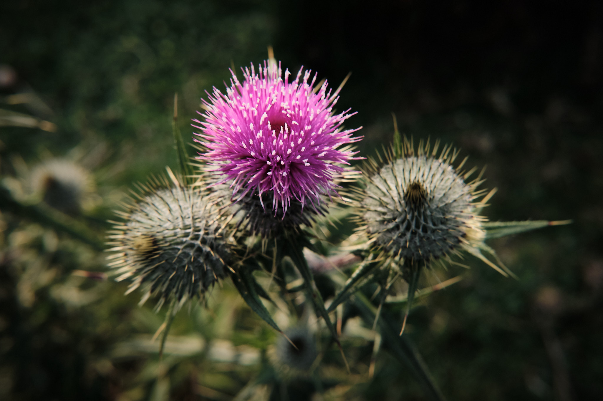
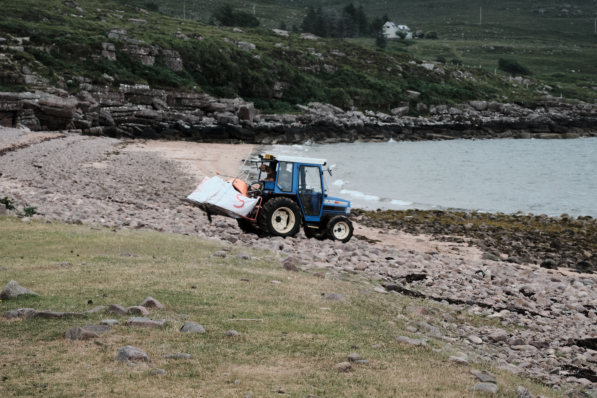
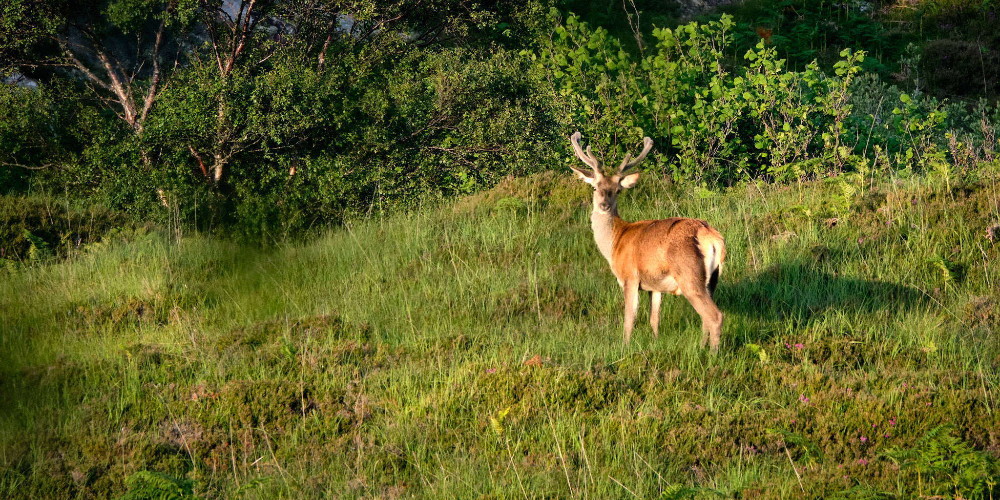
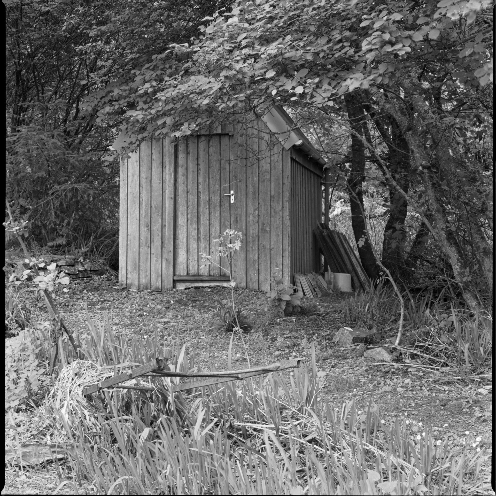
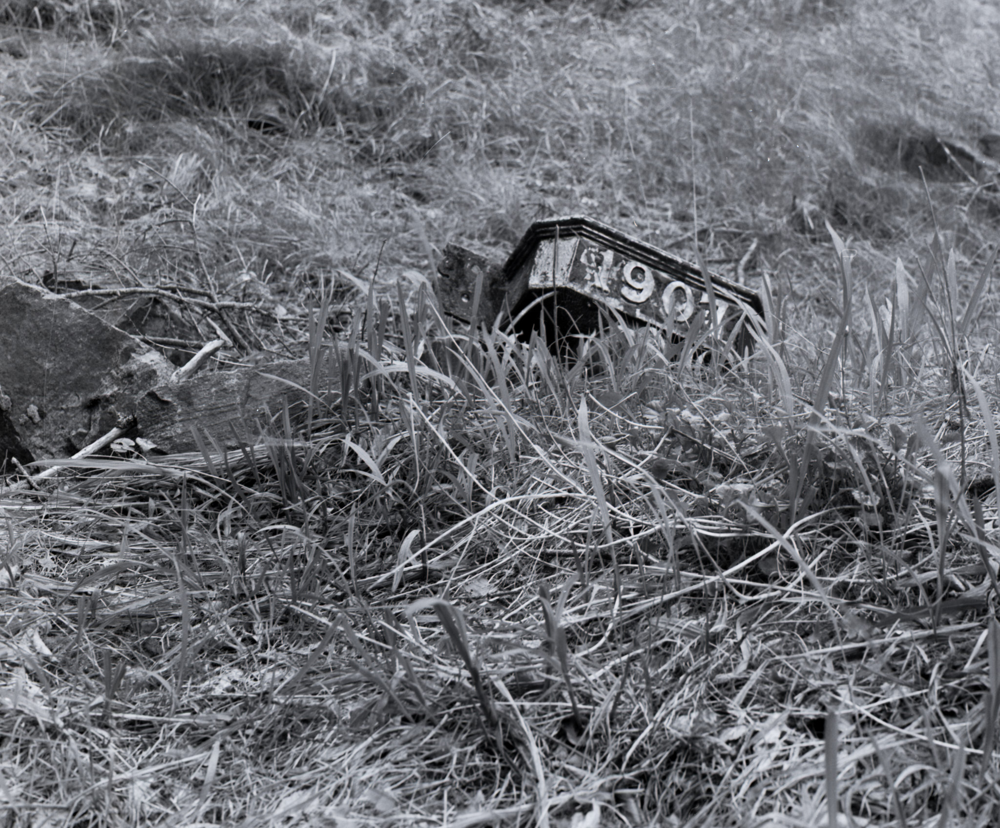
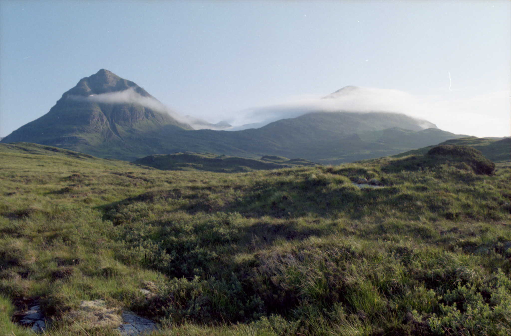
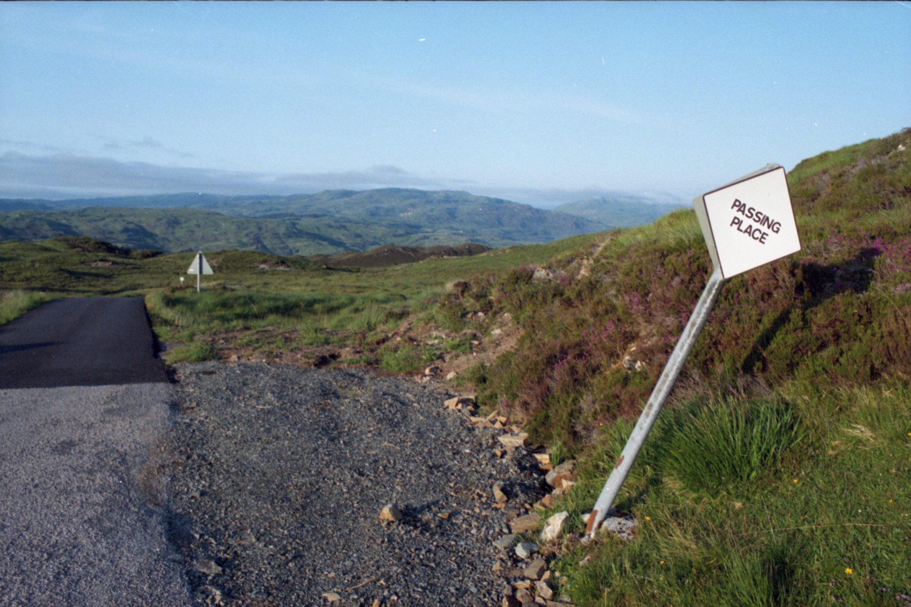

Coigach and Assynt
A few days in the North West
 Thistles. Fuji X-T2
For our summer trip North this year, I took the Hasselblad 503CW and my Nikon FM with digital backup from a Ricoh GRIII and my Fuji X-T2. The Agfa stayed in the bag and the GW690ii stayed at home. There’s only so much gear one can carry.
One of the first beaches we headed for was Acheninver, a short walk from the hostel where we spent the first couple of nights. It was overcast for the first few days of our break, which was a blessing for us because the mobs were elsewhere. At the beach was a man filling builder’s bags with seaweed: curious, I asked him why. Crofter Steve Husband explained that there is a seaweed festival on Isle Martin in September and that a dry run of glassmaking had used the entire stock of seaweed, so he was replenishing. The seaweed is dried and burned with sand to make artisan glass, and burning kelp is an ancient tradition in the North. Some of the seaweed Steve had gathered looked good enough to eat, and indeed, it can be used for culinary purposes.
 Steve in his tractor with his Gaelic-speaking dog. Fuji X-T2
The next day, we tried out a new camping stove on Achmelvich beach, pushing the culinary boundaries by heating up a tin of sausages and beans. Classy. On our meander around the Coigach and Drumbeg, I tried a bit of sketching. Some way to go, I think.
 Achnahaird beach, sketch
Achnahaird beach, sketch
The last few days were spent in Drumbeg House, or at least, in a self-contained house within the grounds of said House. This was a perfectly peaceful place to escape for a few days with its own cairn at the side of its own loch and a decent deer population to get us close to that Highland feeling.
 Young stag. Fuji X-T2
We were treated to a close encounter with one of these stags, at the point we were ready to give up hope of seeing the wildlife without a telephoto lens, when one wandered through the bracken and paused on the grass between the house and the loch, to gaze at us, neither of us knowing whether to grab a camera or just experience the moment.
 Keeper’s shed. Hasselblad 503CW, Kodak TMY 400
The old house has been renovated, we think under new ownership, perhaps to return to its former glory as an exclusive dining experience for those who do that kind of thing. Traces of a more private small estate are still seen in the grounds.
 1907. Hasselblad 503CW, Kodak TMY 400
We went along the coast to explore the peninsula of Culkein and Stoer, where there are wild rocks and waves from the Northern Minch, and hidden caves.
A cave at Stoer. Hasselblad 503CW, Kodak TMY 400
Kylesku is a wonderful place and we visited, travelling home past the Sàil Gharb and Sàil Ghórm corbetts.
 Sàil Gharb and Sàil Ghórm. Nikon FM, Kodak Portra 800
The roads were pretty much deserted around here, even in the post-COVID mad summer of 2021 when all of England discovered Scotland.
 Passing place. Nikon FM, Kodak Portra 800, f/11 1/250s
Notes
Detailed exposure logs for this post are here.
| Image | Camera | Lens | ISO | Format | Aperture | Shutter | Comment |
|---|---|---|---|---|---|---|---|
| Thistles | Fuji X-T2 | XF35mm F2 R WR | ISO 800 | Digital | f/8 | 1/250s | Adjusted in Capture One. |
| Tractor | Fuji X-T2 | XF90mm F2 R LM WR | ISO 800 | Digital | f/11 | 1/500s | Cropped & adjusted in Capture One. |
| Young stag | Fuji X-T2 | XF100-400mmF4.5-5.6 R LM OIS WR | ISO 1600 | Digital | f/10 | 1/500s | Cropped & adjusted in Capture One. |
| Shed | Hasselblad 503CW | Zeiss 80mm f/2.8 | 400 | 120 | f/11 | 1/8s | |
| 1907 | Hasselblad 503CW | Zeiss 80mm f/2.8 | 400 | 120 | f/8 | 1/4s | Cropped |
| Caves | Hasselblad 503CW | Zeiss 80mm f/2.8 | 400 | 120 | f/22 | 1/8s | |
| Sàil Gharb and Sàil Ghórm | Nikon FM | Nikon AI-s 28mm f/2.8 | 800 | 135 | f/11 | 1/250s | |
| Passing place | Nikon FM | Nikon AI-s 28mm f/2.8 | 800 | 135 | f/11 | 1/250s |